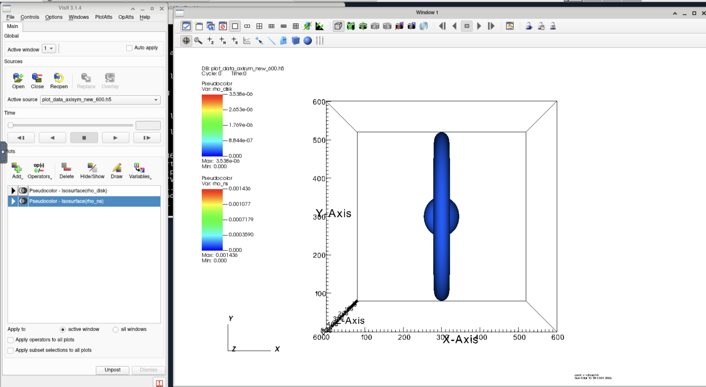
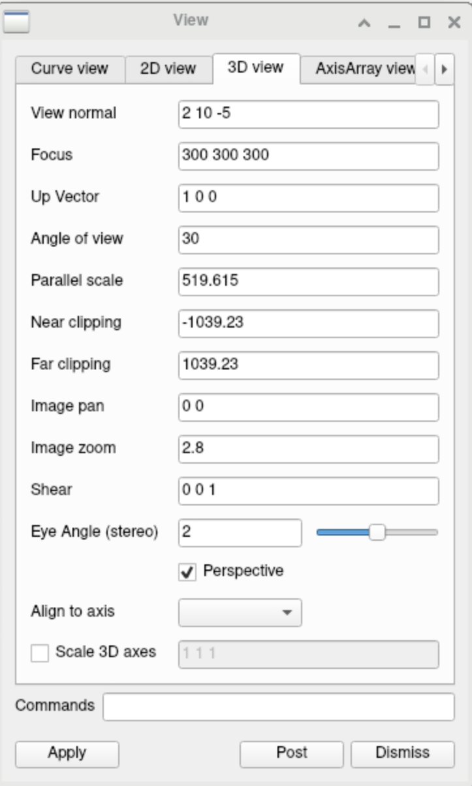
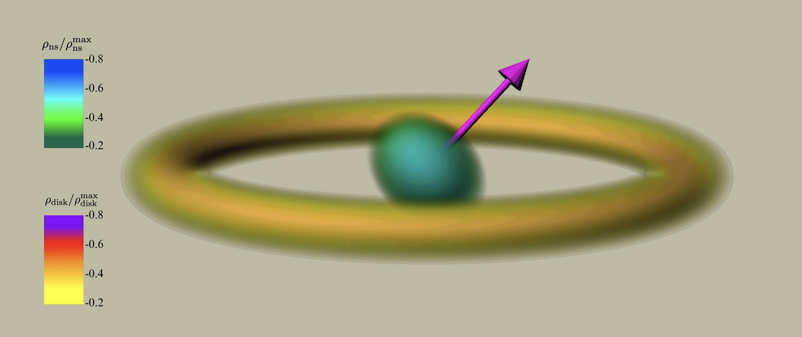
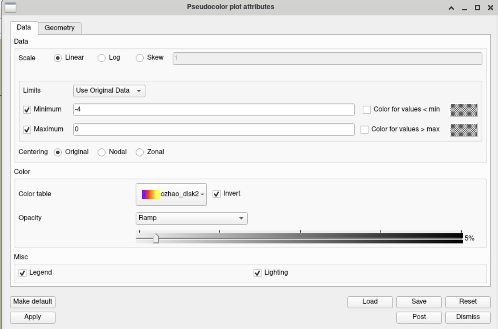
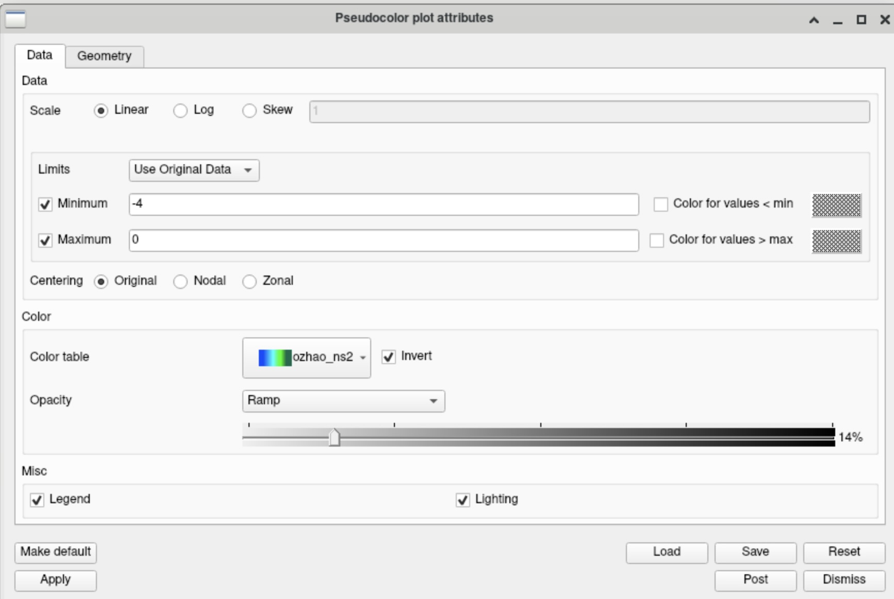
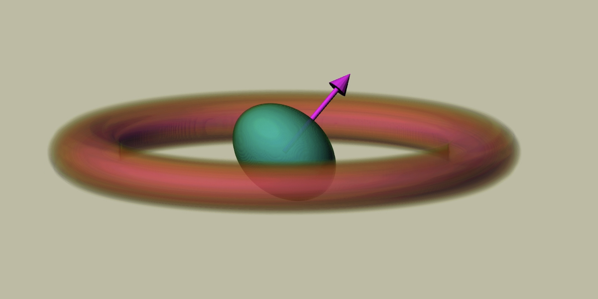
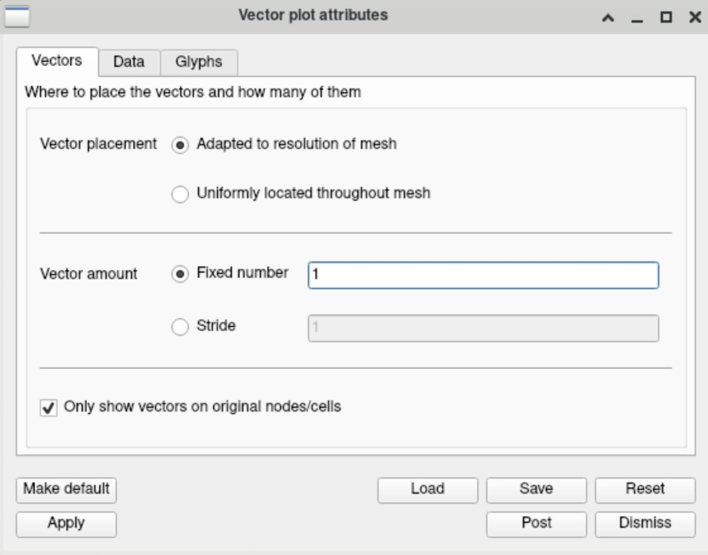
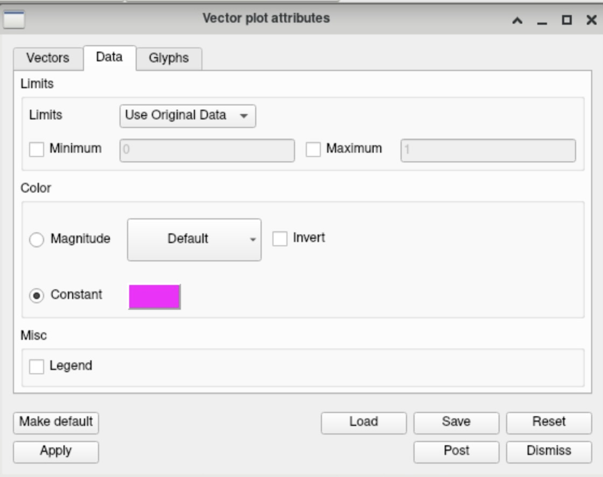
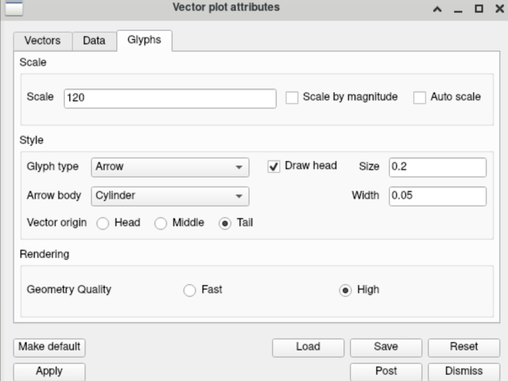
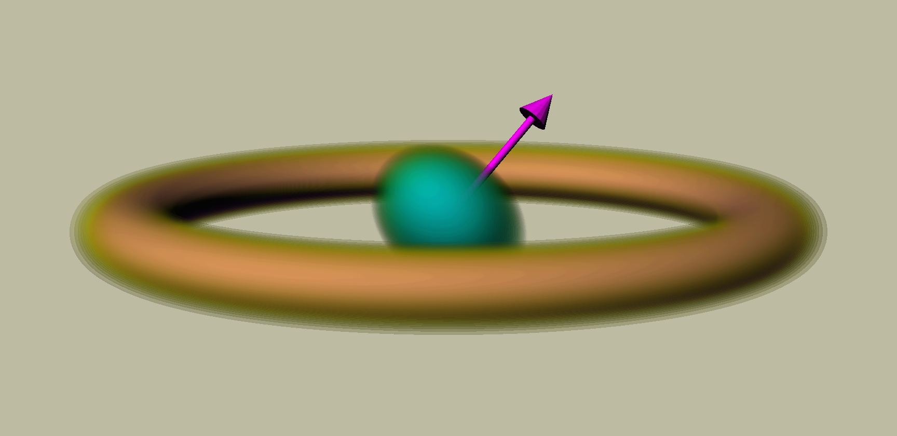

Case Study: Neutron Star with Accretion Disk
In this case study we examine the visualization of a neutron star–disk system using VisIt. The purpose of this section is to document the plotting workflow and the visualization settings used to generate reproducible figures. The data used here correspond to initial data of a rotating neutron star surrounded by an accretion disk.
In this tutorial we primarily demonstrate the procedure using the Anvil GUI, which was the environment I used for this case. Corresponding CLI commands are also provided where applicable.
The dataset used in this section was loaded from
plot_data_axisym_new_600.h5 and plot_data_axisym_norm_600.h5
These two files can be found on Riemann in the following directory:
/data/shared/ozhao_nst_axisym_norm.h5
For this system we generate three types of visualizations:
- raw density plots
- normalized density plots (density divided by the maximum value)
- logarithm of the normalized density
Since the first two types follow very similar procedures, we focus on two representative cases in this section:
- raw density
- logarithm of the normalized density
The main visualization consists of pseudocolor plots of the disk and neutron star, with isosurface operators applied to highlight their structures.
Also, the color bars I used can be found in the GitHub repo listed above.
Isosurface Rendering of Disk: TBW
Volume Rendering of Disk: TBW
Magnetic Field Lines: TBW
Plotting Workflow on COCAL
Spherical to Cartesian Conversion
Since COCAL outputs initial data in spherical coordinates, to plot it in VisIt, we need to convert the data into Cartesian coordinates. The code for doing so can be found on GitHub in
Illinois-Relativity-Group/COCAL_Cartesian. The repository also includes the corresponding code for converting text files into HDF5 format.
Plot Components
The visualization of this case was constructed using the following VisIt pipeline:
- Pseudocolor plot of
rho_ns(orrho_ns_norm,rho_ns_log_norm) - Pseudocolor plot of
rho_disk(orrho_disk_norm,rho_disk_log_norm) - Isosurface operator applied to the neutron star pseudocolor plot
- Isosurface operator applied to the disk pseudocolor plot
- Vector plot of the neutron star spin
The initial procedures should be familiar if the previous sections have been read. We therefore proceed directly to the stage where raw isosurface plots are created for both the disk and the neutron star, as shown in the figure below.

Before proceeding further, we note a few visualization settings that help improve the clarity of the plots. First, we remove the coordinate axes and bounding boxes so that only the color table remains visible (the color table will also be refined later).
In the VisIt GUI, this can be done by navigating to
Controls → Annotations
and disabling the corresponding options.
The corresponding CLI commands are:
AnnotationAtts = AnnotationAttributes()
AnnotationAtts.axes3D.visible = 0
AnnotationAtts.axes3D.triadFlag = 0
AnnotationAtts.axes3D.bboxFlag = 0
AnnotationAtts.userInfoFlag = 0
AnnotationAtts.databaseInfoFlag = 0
SetAnnotationAttributes(AnnotationAtts)
Now your plot should look something like this.
The second thing is to change the background color. This can be achieved by
Controls → Annotations → Colors → Background color.
In this example, the background color used was #bdbca2# for reference.
The equivalent CLI commands are:
AnnotationAtts = AnnotationAttributes()
AnnotationAtts.backgroundMode = AnnotationAtts.Solid
AnnotationAtts.backgroundColor = (189, 188, 162, 255)
SetAnnotationAttributes(AnnotationAtts)
Then, we need to adjust the view of the plot for clarity. In the GUI, this can be done by
Controls → View
The settings used for the example are shown below. The equivalent CLI commands are:
View3DAtts = View3DAttributes()
View3DAtts.viewNormal = (2, 10, -5)
View3DAtts.focus = (300, 300, 300)
View3DAtts.viewUp = (1, 0, 0)
View3DAtts.viewAngle = 30
View3DAtts.parallelScale = 519.615
View3DAtts.imagePan = (0, 0)
View3DAtts.imageZoom = 2.8
View3DAtts.perspective = 1
SetView3D(View3DAtts)
A more detailed explanation of the different parameters can be found in the official VisIt tutorial:

Now your plot should look something like this.

After the setup, we can proceed to the main procedure.
Isosurface, Opacity, and Density Range Settings
The first step should be loading the color tables you will be using for neutron star and disk densities.
Isosurface Levels
Then, to better emphasize the structural features of the system, several visualization parameters can be adjusted.
One of the most important parameters is the number of isosurface levels, which controls how many contour shells are rendered.
In the GUI, this can be done by
Isosurface operator attributes → Select by -- N level --

The settings for the CLI used in this example are shown below:
IsosurfaceAtts = IsosurfaceAttributes()
IsosurfaceAtts.contourNLevels = 50
IsosurfaceAtts.contourMethod = IsosurfaceAtts.Level
IsosurfaceAtts.scaling = IsosurfaceAtts.Linear
SetOperatorOptions(IsosurfaceAtts, 0, 0)
Opacity Settings
The next parameter to adjust is the opacity setting.
Opacity controls how transparent the rendered surface is and therefore determines how easily internal structures and overlapping surfaces can be seen.
In the GUI, this can be adjusted through
Pseudocolor → Opacity
For this example, a Ramp opacity profile was used with a representative value around 22% for neutron star density.
For disk density, a Constant opacity around 11% was used.
Density Range (Min/Max)
Finally, you might want to play with min and max in Pseudocolor.

The equivalent CLI commands for Pseudocolor settings of neutron star density are shown below as an example:
PseudocolorAtts = PseudocolorAttributes()
PseudocolorAtts.minFlag = 1
PseudocolorAtts.min = 2e-4
PseudocolorAtts.maxFlag = 1
PseudocolorAtts.max = 1e-3
PseudocolorAtts.colorTableName = "ozhao_ns2"
PseudocolorAtts.invertColorTable = 1
PseudocolorAtts.opacityType = PseudocolorAtts.Ramp
PseudocolorAtts.opacity = 0.223529
SetPlotOptions(PseudocolorAtts)
The equivalent CLI commands for Pseudocolor settings of disk density are:
PseudocolorAtts = PseudocolorAttributes()
PseudocolorAtts.minFlag = 1
PseudocolorAtts.min = 4e-7
PseudocolorAtts.maxFlag = 1
PseudocolorAtts.max = 2e-6
PseudocolorAtts.colorTableName = "ozhao_disk2"
PseudocolorAtts.invertColorTable = 1
PseudocolorAtts.opacityType = PseudocolorAtts.Constant
PseudocolorAtts.opacity = 0.117647
SetPlotOptions(PseudocolorAtts)
Note: the numbers and options provided are just for reference. The exact settings should be experimented with patience.
Finally, your plot might look something similar to this.

This is it for the raw density plot; all you need might be some patience to experiment.
Normalized Densities
As we have mentioned, the normalized density graph should follow very similarly. In case you might need the code to make a normalized density HDF5 file, here it is.
https://github.com/Illinois-Relativity-Group/COCAL_Cartesian
(This also includes log normalized densities).
Just for reference, the min and max of the color bars are shown below, and your final plot might resemble something like this. Again, this is just a reference; you will need to do a lot of experiments.

Log Normalized Densities
Next, we talk about another special case: log normalized density. More specifically, it means
$$ \log_{10}(\frac{\rho}{\rho_{max}}) $$
for both disk and neutron star.
(For files to make HDF5 in log normalized densities, see the above section on normalized density)
The general pipeline still closely resembles the above, but due to the different scaling of the data, the specific settings might be a bit different.
As a note: I will not be providing many CLI commands for this section since they should be exactly the same as above, except for the exact parameters.
The purpose of this section is simply to provide a reference setting for log normalized densities, since it is quite special. Anything else would be very similar to the above.
The log normalized plot is somewhat slow when you run it, so more patience might be needed. Additionally, different from above, I also adjusted the isosurface limit. If you use the default setting, the software may crash (on Anvil). It is better to filter the important data beforehand. But again, as always, experiment yourself.
Below is the CLI.
IsosurfaceAtts = IsosurfaceAttributes()
IsosurfaceAtts.contourValue = ()
IsosurfaceAtts.contourPercent = ()
IsosurfaceAtts.contourMethod = IsosurfaceAtts.Level
IsosurfaceAtts.minFlag = 1
IsosurfaceAtts.min = -4
IsosurfaceAtts.maxFlag = 1
IsosurfaceAtts.max = 0
IsosurfaceAtts.scaling = IsosurfaceAtts.Linear
IsosurfaceAtts.variable = "default"
SetOperatorOptions(IsosurfaceAtts, 0, 0)
Another thing to adjust might be the color table limits and opacity.
For log normalization, a preferable limit for both color bars is \( -4 \) to \( 0 \).
Details for disk and neutron star color table settings are shown below.


Anything else would be the same.
This is it. Your final plot might resemble something like this.

You probably have noticed that there is an arrow on the plot, indicating the direction of rotation of the neutron star.
Our next topic will be how to make one.
Adding Spin Arrow
To add a vector, we need a VTK file, which you will probably know if you have read the previous sections of the manual.
In my case, the VTK was trivial, and an example file can be found again in my GitHub repo.
To inspect the direction of the spin arrow, you might need to look up rnsphyseq_v1.dat or nstpar.dat (which is in my case).
Then, as usual, you load the VTK file into VisIt.
After adding the VTK as a vector field, here are some things to adjust for this case.
First, we only need one large vector arrow for this case to indicate the spin of the neutron star, so you want to set the number of vectors to 1 as below.

Then, we choose a single color and untick the legend for clarity of the image.

Finally, we need to set the size and scale of the arrow. As usual, my settings are below, and you might need to experiment yourself.

The equivalent CLI commands are below for reference.
AddPlot("Vector", "v", 1, 0)
VectorAtts = VectorAttributes()
# Vector placement
VectorAtts.glyphLocation = VectorAtts.AdaptsToMeshResolution
VectorAtts.useStride = 0
VectorAtts.stride = 1
VectorAtts.nVectors = 1
VectorAtts.origOnly = 1
# Vector appearance
VectorAtts.glyphType = VectorAtts.Arrow
VectorAtts.vectorOrigin = VectorAtts.Tail
VectorAtts.lineStem = VectorAtts.Cylinder
VectorAtts.geometryQuality = VectorAtts.High
VectorAtts.lineWidth = 0
VectorAtts.stemWidth = 0.05
VectorAtts.headSize = 0.2
VectorAtts.headOn = 1
VectorAtts.scale = 120
VectorAtts.scaleByMagnitude = 0
VectorAtts.autoScale = 0
VectorAtts.colorByMag = 0
VectorAtts.useLegend = 0
VectorAtts.vectorColor = (255, 0, 255, 255)
VectorAtts.colorTableName = "Default"
VectorAtts.invertColorTable = 0
VectorAtts.minFlag = 0
VectorAtts.maxFlag = 0
VectorAtts.limitsMode = VectorAtts.OriginalData
VectorAtts.min = 0
VectorAtts.max = 1
VectorAtts.animationStep = 0
SetPlotOptions(VectorAtts)
DrawPlots()
After these adjustments, your plot should look like this.

That's it! Thanks for reading.